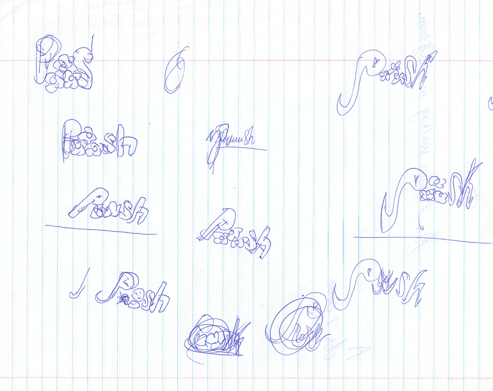
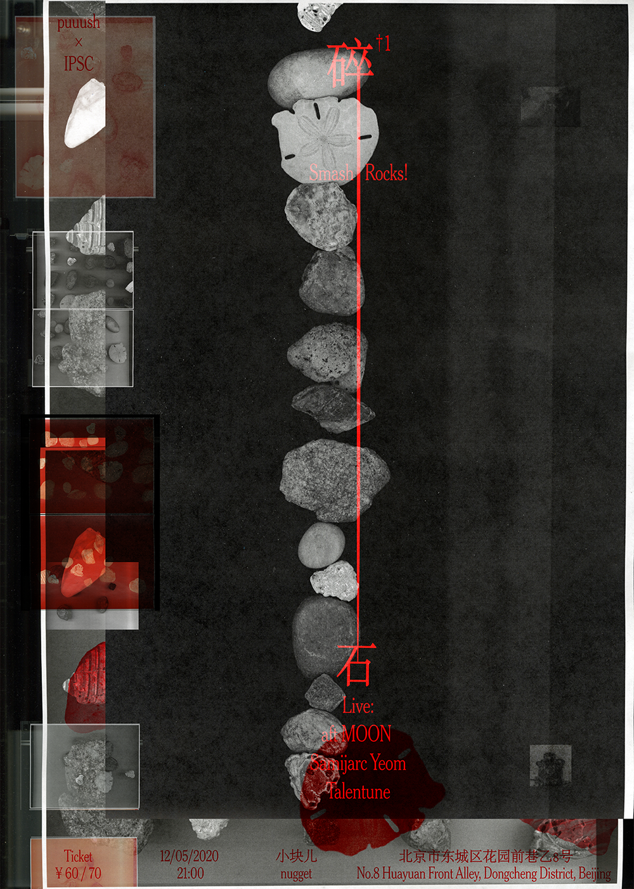

puuush.net
EN
关 于
潺 潺

15-12-2020
01
林秀琴 - 日 常 生 活
26-11-2020
00 前奏与循环碎片
༄
*新 闻

碎 石_1
05-12-2020 @nugget, Beijing
↺
puuush (推推) 是一个基于音乐/声音分享的平台，通过与不同身份的个体交流，以探索工作与生活的可能性。从线上聆听到线下活动，我们希望构建一个界限模糊的文化场所，一种灵活开放的协作方式，一个创造力与友谊并存的社区。puuush由周玥和余丽华共同创立、运营。如果你有任何问题或者想法，欢迎随时联系我们！ ✉
puuush.net@gmail.com
你也可以在≈✧ {
微 信
}≈≈≈≈ {
微 博
} ≈≈≈≈ {
I n s t a g r a m
} ≈≈≈≈ {
S o u n d C l o u d
} ≈≈≈≈≈≈≈≈ {
网 易 云 音 乐
} ≈≈✧≈ 找到我们。©2020
❅
❆
❅
❆
❅
❆
❅
❆
❅
❆
❅
❆